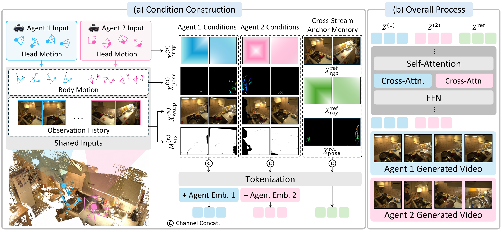

Both agents wear head-mounted cameras while cooking together. Given each agent's head trajectory, both agents' body motion and the shared observation history, ME-World generates the two ego streams jointly, so the partner's hands, the counter and the objects being handled agree across the two views.
On the synthetic benchmark each agent is a different rigged avatar, so the model has to keep the counterpart's identity stable while both viewpoints move. The third-person view (TPV, the square tile at the right of each pair) is a separate camera placed in the scene so the interaction can be read from outside; it is neither generated nor given to the model.
The formulation is written for N agents. Without changing the model, we append a third stream to the joint sequence and generate three synchronized ego views of three interacting avatars.
Chunks are chained by conditioning each new chunk on two frames of the previous one. The model is trained with teacher forcing: the conditioning frames come from ground truth, lightly perturbed with noise, so it learns to continue from imperfect handoff frames without ever rolling out during training. At inference a two-agent sequence of 221 frames keeps the same agents and the same room throughout.
We compare against three families using released checkpoints without fine-tuning: multi-view video generation (GEN3C, AnyView-DVS), which receives one agent's ground-truth stream as the source view; single-ego world models (EgoSim, JointControlVideo); and general world models (DreamX-World, LingBot-World), which generate the two streams independently. Pick an example below.
Training needs synchronized multi-ego recordings that share one world state. We combine real two-person recordings from CoMind with a synthetic set rendered from interacting avatars, and process both into the same conditioning format: scene, pose, camera, reference images and text.
Two people wear head-mounted cameras while cooking together. Body and hand joints of both agents are rendered into each view with one fixed colour per person, so the same person keeps the same colour in every stream.
Paired motions from Inter-X and InterHuman are retargeted onto rigged VRM avatars, placed at validated anchors in indoor and outdoor Blender scenes, and rendered synchronously from two head-mounted cameras. Rendered depth and instance masks give exact warped-scene, visibility, pose and ray conditions for every frame.
ME-World fine-tunes a video diffusion transformer to denoise all agents' ego streams as one shared token sequence. Each stream is conditioned on its own viewing rays and on every agent's body motion, and the whole sequence is grounded by a shared environment memory built from all agents' observation history.

The noisy latents of all agents are concatenated along the token dimension so that self-attention exchanges information across streams at every layer. Streams share one positional frame and are told apart by a learnable agent embedding. Text conditioning stays per stream through separate cross-attention paths.
Instead of feeding each stream only its own action, we render the body and hand skeletons of all agents into each target view, with a consistent colour per identity. The target agent's own hands and arms appear as ego-visible motion, and the other agents appear as observed motion. Head motion is expressed as per-pixel rays in a shared canonical frame, so camera trajectories across streams are geometrically comparable.
All agents' past observations are pooled. The stream-aligned geometric memory path picks the history frame with the largest reprojected coverage of each target view, masks out the agents, and warps it into that view together with a visibility mask. The cross-stream anchor memory path greedily selects history frames that cover complementary regions and appends them, unwarped, as clean reference tokens that every stream attends to during denoising.
Starting from Cosmos-Predict2.5 with image and text conditioning, we add the conditions one at a time. Joint generation couples the streams so appearance and environment stop diverging. Shared action renders every agent's pose into each view so the same interaction appears from both sides. Shared environment memory anchors both streams to the same room.
Cross-view agreement can come for free from shared inputs. To isolate what the model itself keeps consistent, we compare generated streams only where the input gives no direct answer, using co-visible correspondences from ground-truth depth and cameras.
Alongside these we report camera control, self and other-agent action control, and standard video quality. ME-World improves all of them over multi-view, single-ego and general world models on both benchmarks. See the paper for the tables.
Egocentric world models predict first-person observations conditioned on an agent's actions, but most focus on a single agent. Real embodied settings often involve multiple agents that act and interact within a shared environment. Existing multi-agent world models generate observations for multiple agents, but rely on coarse actions like locomotion, camera control, or discrete commands, leaving fine-grained embodied interactions underexplored. We formulate embodied multi-agent world modeling as synchronized ego-stream generation for multiple agents interacting through fine-grained actions in a shared world. This requires cross-view action consistency, shared-environment consistency, and consistent propagation of interaction-induced state updates. We propose ME-World, which jointly denoises multiple ego streams in a shared token sequence, conditions each stream on all agents' target-view poses, and grounds generation with shared environment memory. We train and evaluate on real and synthetic multi-agent data and introduce shared-world consistency metrics for environment, update, and identity consistency. Experiments show ME-World improves shared-world consistency, action control, identity preservation, and video quality over existing methods.
@article{chung2026meworld,
title={{ME-World: Multi-Agent Egocentric World Model with Fine-Grained Embodied Interaction}},
author={Chung, Dahyun and Jin, Siyoon and Choi, Hyunwook and An, Honggyu and Seo, Junyoung and Kim, Hyunsung and Kim, Seung Wook and Kim, Seungryong},
journal={arXiv preprint arXiv:XXXX.XXXXX},
year={2026}
}